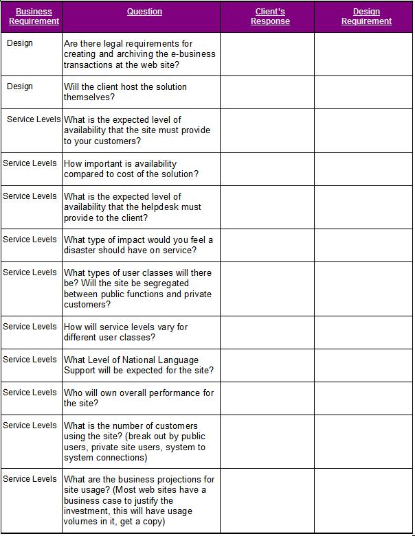
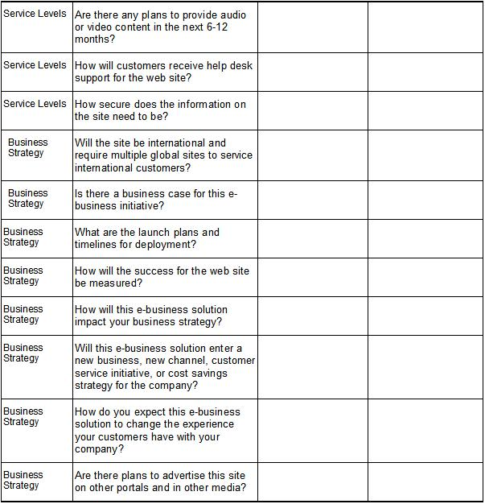

| Guideline: RID Executive Interview Guide |
 |
|
1 DescriptionIt is often valuable to set up interviews with a few of the client’s key e-business leaders the day before the workshop begins. These interviews will provide the IBM team with a perspective on the various goals and objectives the client’s organization has for the e-business solution. This can provide the IBM team with a better context for framing and conducting the Business Requirements Workshop The intent is NOT to pre-interview all workshop participants. Pre-workshop interviews should be limited to two or three key business leaders in the client’s firm, who have a vision and strong expectations for the success of the e-business solution. 2 ContextThe purpose of this task is to gather background information prior to conducting the Business Requirements Workshop. The interviews will allow the IBM team to clarify any issues that may have surfaced in the questionnaires and allow a vocal person to “have their say” ahead of time, rather than risking them dominating the workshop. 2.1 StaffingThe Executive Interviews should be staffed with one (1) engagement manager, who will lead the interview, and one (1) consultant who will act as a scribe. Many times, a second pair of ears and eyes will catch a thought or provide an insight that one alone will not. Both should have a copy of and be familiar with the questions to be asked. There may be times when the consultant briefly leads the questioning to gain better insight into the client’s objectives. In this case, it is imperative that the engagement manager continues documenting the responses. Put simply, while one IBM team member is asking questions, the other should be documenting responses. 3 Steps3.1 Prepare Interview GuideBefore scheduling interviews with the key participants, choose which questions will be asked from the question list in Appendix A. Copy and paste them to a new document. This list forms the basis for all of the key information, and the questions you ask the client should come from or be very closely related to the questions on the list. 3.2 Identify IntervieweesSet up interviews with a few key participants the day before the workshop begins in order to better understand any issues that may have surfaced in the questionnaires, or to allow a very vocal person to “have their say” ahead of time instead of having them potentially dominate the workshop. 3.3 Interview ParticipantsPrior to the interview you should review the questions, start time, company dress code, and the room/set up arrangements for the session with your sponsor. (Experience has proven that the participants will be more relaxed and vocal if you can arrange for business casual attire.) 3.4 Review ResponsesAfter the interviews are completed, the responses to interview questions should be documented in the BUS 340 Hypothesis and Data Framework in Appendix B, which will contain sections specific to the business requirements in the matrix. Additionally, the team should analyze the responses to the interview questions and begin to capture key requirements in the ARC119 Non-Functional Requirements. If the interviews are conducted, the Non-Functional Requirements Work Product should be created at this time, and the draft should be updated as the following Phase I tasks and activities are conducted. NOTE: For the purposes of RID and general infrastructure design, the Non-Functional Requirements Work Product document is to contain requirements that are specific to the design and implementation of the infrastructure, its components and their service delivery. It should not be used as a catch-all or trash-bin for requirements looking for a home to be documented in. Business process, training and testing requirements do not have a place in this document and should be captured in documents for their own purposes. 4 Appendix A – Executive Interview Question List4.1 Design
4.2 Service Levels
4.3Business Strategy
5 Appendix B – BUS 340 Hypothesis and Data Framework: Business Requirements Template  |
| © Copyright IBM Corp. 1987, 2012 All Rights Reserved Property of IBM These materials are intended only for use as part of an IBM engagement |